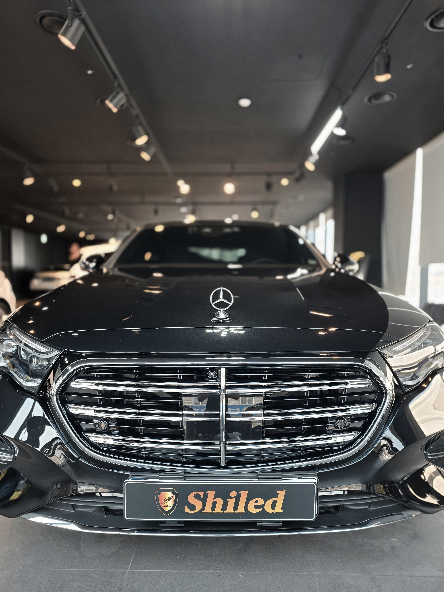
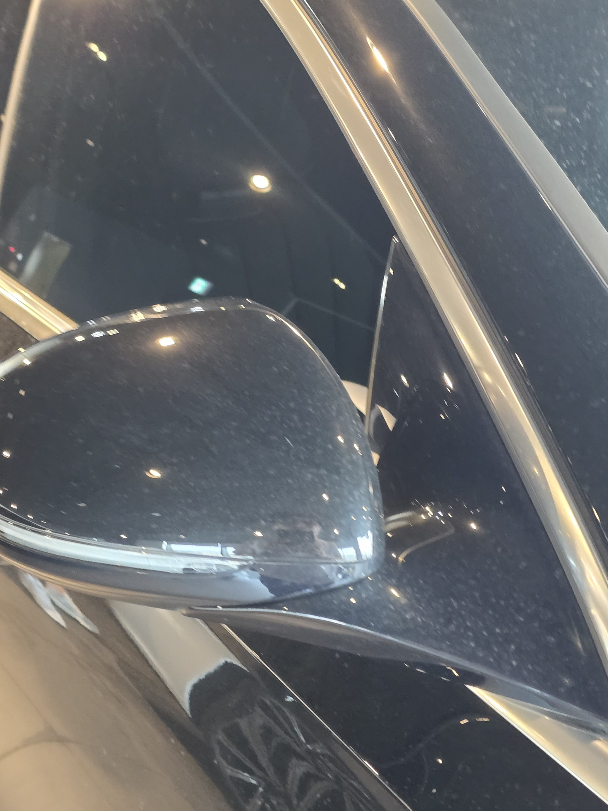
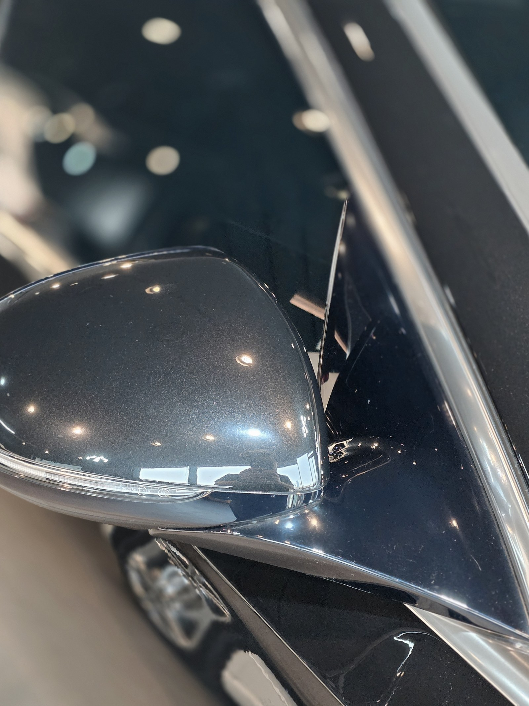
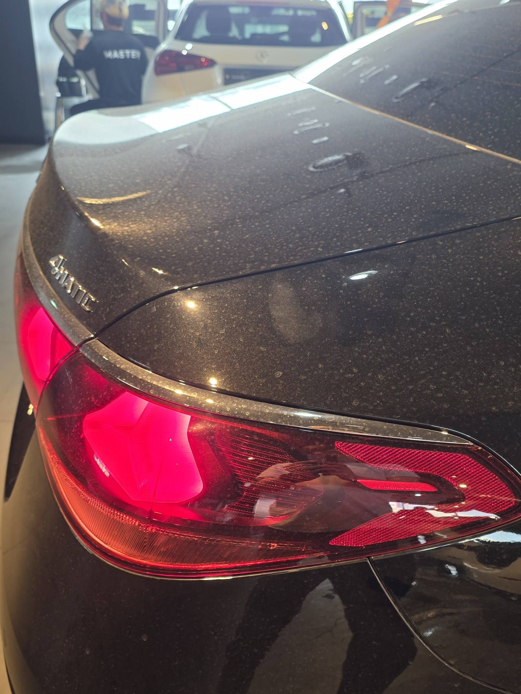
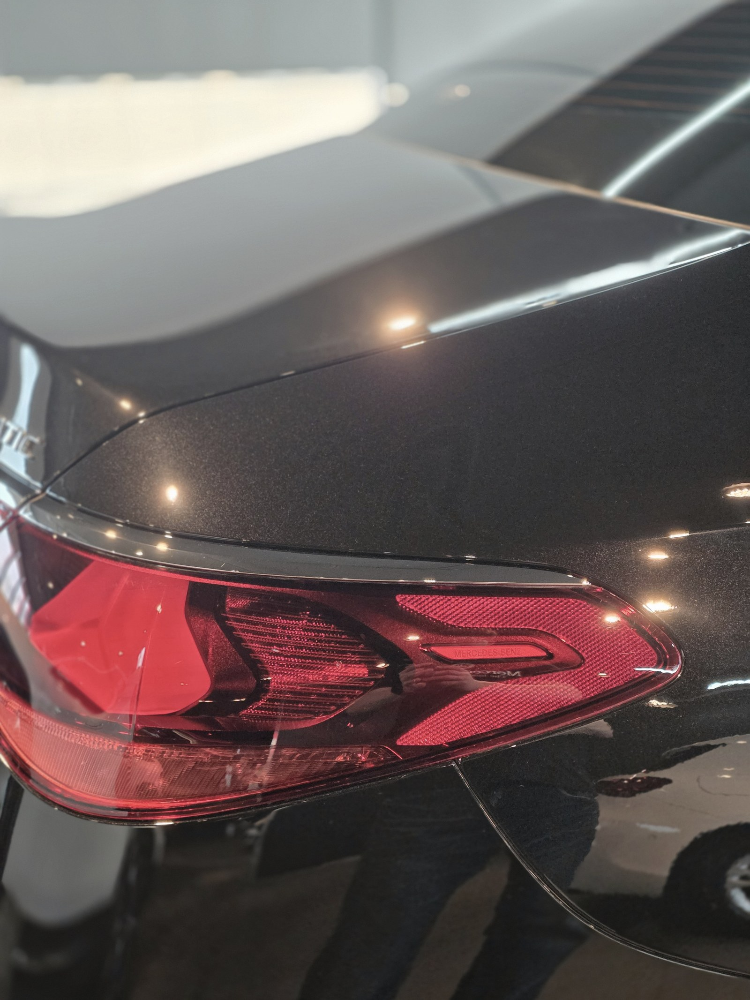
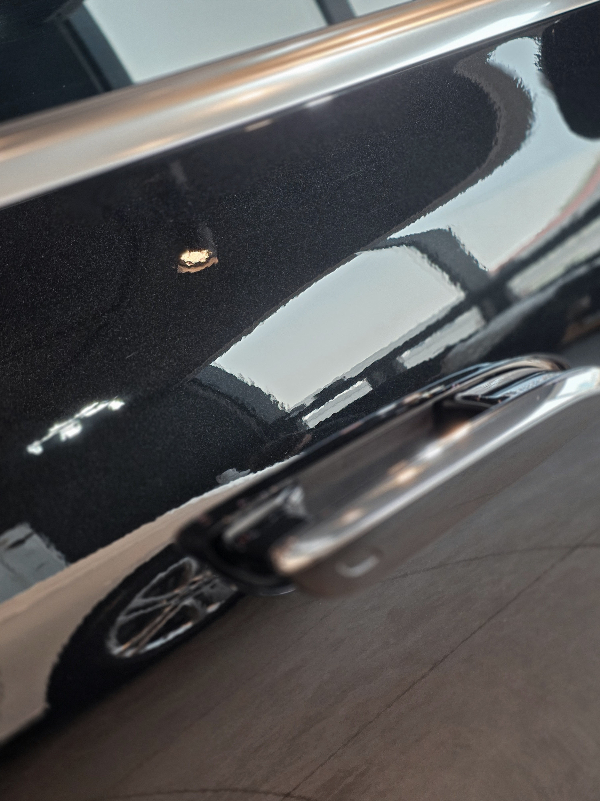
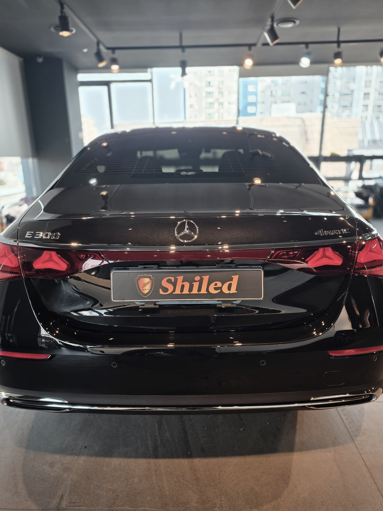

부산 쉴드광택에 들어온 벤츠 E300 검정입니다.
이 차는 광택으로 표면을 정리한 뒤, 유리막코팅으로 마감했습니다.

검정은 왜 관리가 더 까다로운가
검정은 빛 반사가 강해 발색이 가장 깊게 살아나는 색입니다.
그만큼 작은 오염, 물때, 잔기스까지 전부 드러납니다. 발색이 좋은 만큼 표면 상태가 그대로 보이는 색입니다. 그래서 표면을 정리하는 광택과 보호막을 올리는 코팅의 차이가 가장 크게 나는 색이기도 합니다.
코팅 전, 전처리가 9할입니다
좋은 코팅도 더러운 바탕 위에 올리면 의미가 없습니다.
디테일링 세차로 표면 오염을 걷어내고, 철분 제거제로 박힌 쇳가루를 녹여냅니다. 부위별로 마스킹해 경계를 잡고, 탈지까지 끝내야 비로소 코팅을 올릴 면이 됩니다. 눈에 안 보이는 오염까지 잡는 게 퀄리티의 시작입니다.
기술자의 팁
검정은 닦아낸 자국, 먼지 한 톨까지 빛 아래에서 드러납니다. 그래서 마무리 단계에서 조명을 여러 각도로 비춰가며 잔여 오염을 한 번 더 점검합니다.
같은 자리를 전후로 비교하면 정확합니다
말로 "표면을 정리했습니다"라고 하는 것보다, 같은 자리를 전후로 비교하는 게 정확합니다.
아래 사진은 작업 전과 작업 후에 같은 위치를 같은 조명 아래에서 본 것입니다.


사이드미러·창틀 — 표면에 끼어 있던 오염이 정리되니 반사가 또렷해집니다


리어램프 주변 — 빛을 받는 곡면이라 차이가 가장 크게 보이는 부위입니다
마감 후
표면을 정리하고 코팅막을 올리니, 검정이 한층 깊고 묵직해졌습니다.
왜곡 없이 떨어지는 반사가, 표면을 평탄하게 잡고 코팅막이 고르게 올라갔다는 증거입니다.


시공 후, 이렇게 관리하세요
코팅은 시공으로 끝이 아닙니다. 관리로 수명이 갈립니다.
완전 경화 전(약 하루)에는 비·눈·세차를 피해 주십시오. 자동세차(기계세차)는 브러시가 잔기스를 만드니 피하시는 게 좋습니다. 3주에 한 번 관리 세차 때 전용 관리제 '마스터샤이니'를 뿌려주시면 코팅력이 오래 유지됩니다.
자주 묻는 질문
Q. 검정차는 왜 관리가 더 까다로운가요?
A. 검정은 발색이 가장 깊게 살아나는 색이라, 작은 오염·물때·잔기스까지 전부 드러납니다. 그래서 표면을 정리하는 광택과 보호막을 올리는 코팅의 차이가 가장 크게 나는 색입니다.
Q. 검정차도 광택부터 하고 코팅하나요?
A. 표면에 잔기스·오염이 있으면 광택으로 먼저 정리합니다. 잔기스가 깔린 채로 코팅만 올리면 그대로 덮어 굳히게 됩니다. 표면을 평탄하게 잡은 뒤 코팅을 올려야 깊은 반사가 살아납니다.
Q. 코팅 전 전처리는 왜 중요한가요?
A. 좋은 코팅도 더러운 바탕 위에 올리면 의미가 없습니다. 디테일링 세차·철분 제거·마스킹·탈지를 끝내야 코팅을 올릴 면이 됩니다. 눈에 안 보이는 오염까지 잡는 게 퀄리티의 시작입니다.
Q. 코팅 후 관리는 어떻게 하나요?
A. 완전 경화 전 약 하루는 비·눈·세차를 피해 주십시오. 자동세차는 잔기스를 만드니 피하시고, 3주에 한 번 마스터샤이니로 관리하시면 코팅력이 오래 유지됩니다.
Q. 쉴드광택 위치와 예약은 어떻게 하나요?
A. 부산 남구 유엔로220 1F 쉴드광택입니다. 예약·상담은 010-3384-1850, 대표 최한중이 직접 상담하고 책임 시공합니다.
신차든 출고한 지 된 차든, 시작점이 다르면 결과도 다릅니다.
제품을 직접 만드는 사람이 직접 시공합니다.
부산에서 광택·유리막코팅을 고민 중이시면 편하게 연락 주십시오.
어떤 차를 타냐보다 어떻게 타냐가 중요합니다~!
📞 010-3384-1850 견적 문의쉴드광택 · 부산 남구 유엔로220 1F · 대표 최한중